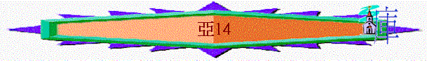

|
耶和華心裏極其火熱 |
|||
|
為選民犯罪而大發烈怒 |
為重建錫安而極其火熱 |
為復興錫安而極其火熱 |
為彌賽亞國而親自成就 |
|
1:2-6 |
1:7-6:15 |
7-8 |
9-14 |
1.為拯救群羊而極其熱心----第1默示(9-11)
2.為那日來臨而親自成就----第2默示(12-14)
A.成就得救的日子(12-13)
B.成就主降臨日子(14)
a.那日----耶城必被困(14:1-3)
「耶和華的日子臨近，你的財物必被搶掠，在你中間分散。因為我必聚集萬國與耶路撒冷爭戰，城必被攻取，房屋被搶奪，婦女被玷污，城中的民一半被擄去；剩下的民仍在城中，不至剪除。那時，耶和華必出去與那些國爭戰，好像從前爭戰一樣。」14:1-3
「他們本是鬼魔的靈，施行奇事，出去到普天下眾王那裡，叫他們在神全能者的大日聚集爭戰。」啟16:14
〜「耶和華的日子」即將來末後的日子，主要降臨前的時間，耶路撒冷必被圍困，財物必被搶掠，婦女也被玷污，城中的民一半被擄去，但神必出去與列邦爭戰
b.那日----救主必降臨(14:4-8)
(1)降臨在橄欖山
「那日，他的腳必站在耶路撒冷前面朝東的橄欖山上。這山必從中間分裂，自東至西成為極大的谷。山的一半向北挪移，一半向南挪移。」14:4
「「加利利人哪，你們為什麼站著望天呢？這離開你們被接升天的耶穌，你們見他怎樣往天上去，他還要怎樣來。」」徒1:11
〜主在橄欖山上（在城東）升天，他也會照樣降臨此山
～而橄欖山高達2600多尺
(800公尺) , 是耶路撒冷地區的高山之一
(2)山地也必震動
「你們要從我山的谷中逃跑，因為山谷必延到亞薩。你們逃跑，必如猶大王烏西雅年間的人逃避大地震一樣。耶和華我的神必降臨，有一切聖者同來。」14:5
「又有閃電、聲音、雷轟、大地震，自從地上有人以來，沒有這樣大、這樣利害的地震。那大城裂為三段，列國的城也都倒塌了；神也想起巴比倫大城來，要把那盛自己烈怒的酒杯遞給他。各海島都逃避了，眾山也不見了。」啟16:18-20
～亞薩位置不能確定，是近新山谷極東之地，將來山地也必震動，形成極大的谷
～「聖者」應指天上的諸軍僕役
(3)三光也必退縮
「那日，必沒有光，三光必退縮。那日，必是耶和華所知道的，不是白晝，也不是黑夜，到了晚上才有光明。」14:6-7
「不再有黑夜；他們也不用燈光、日光，因為主神要光照他們。他們要作王，直到永永遠遠。」啟22:5
〜主來臨時，三光（日光、月光與星光）也退縮，主要成為日光，照亮世人，所以沒有了白晝及黑夜之分，而「到了晚上」可能指到了末日審判的日子，主如光明般來臨。
(4)活水也必流出
「那日，必有活水從耶路撒冷出來，一半往東海流，一半往西海流；冬夏都是如此。」14:8
「天使又指示我在城內街道當中一道生命水的河，明亮如水晶，從神和羔羊的寶座流出來。」啟22:1
〜耶路撒冷會流出活水來，一半往東海流（死海），一半往西海流（地中海）
c.那日----真神必作王(14:9-11)
(1)神必作全地的王
「耶和華必作全地的王。那日耶和華必為獨一無二的，他的名也是獨一無二的。」14:9
(2)耶路撒冷居高位
「全地，從迦巴直到耶路撒冷南方的臨門，要變為亞拉巴。耶路撒冷必仍居高位，就是從便雅憫門到第一門之處，又到角門，並從哈楠業樓，直到王的酒醡。」14:10
〜「迦巴」----猶大國的北方，「臨門」----南方的小城，代表從南至北，全國意思
〜「亞拉巴」----平原，耶路撒冷之高位
〜「角門」位於西邊，「哈楠業樓」位於城牆最北處，王的酒醡則在南面，「第一門」耶路撒冷城牆東北角，「便雅憫門」位於耶路撒冷北面的城牆，所以「便雅憫門……酒醡」代表耶路撒路城周圍
(3)居民必安然居住
「人必住在其中，不再有咒詛。耶路撒冷人必安然居住。」14:11
〜神作全地之王後，城必不受咒詛，人可安然居住
d.那日----列國必受罰(14:12-15)
(1)肉體必受苦
「耶和華用災殃攻擊那與耶路撒冷爭戰的列國人，必是這樣：他們兩腳站立的時候，肉必消沒，眼在眶中乾癟，吞在口中潰爛。」14:12
～肉必消沒，可能是指創傷之處潰爛腐蝕，眼也枯乾凹下，口也潰爛來
(2)各人互攻擊
「那日，耶和華必使他們大大擾亂。他們各人彼此揪住，舉手攻擊」14:13
(3)財物被奪去
「猶大也必在耶路撒冷爭戰。那時四圍各國的財物，就是許多金銀衣服，必被收聚。」14:14
(4)牲畜也災殃
「那臨到馬匹、騾子、駱駝、驢，和營中一切牲畜的災殃是與那災殃一般。」14:15
e.那日----萬民必歸神
(1)萬民敬拜神
「所有來攻擊耶路撒冷列國中剩下的人，必年年上來敬拜大君王萬軍之耶和華，並守住棚節。地上萬族中，凡不上耶路撒冷敬拜大君王萬軍之耶和華的，必無雨降在他們的地上。」14:16-17
〜他們年年必上來敬拜神，不敬拜神者必受咒詛，而住棚節是猶太人的大節期，將來外邦人也與選民一同歡樂守節。
(2)凡物都歸神
「當那日，馬的鈴鐺上必有「歸耶和華為聖」的這句話。耶和華殿內的鍋必如祭壇前的碗一樣。凡耶路撒冷和猶大的鍋都必歸萬軍之耶和華為聖。凡獻祭的都必來取這鍋，煮肉在其中。當那日，在萬軍之耶和華的殿中必不再有迦南人。」14:20-21
〜昔日，大祭司的冠冕上的金牌刻有「歸耶和華為聖」字句，但到主降臨在世作王那日，所有人、物件、動物，獻祭工具也分別出來歸於神，屬於神，成為聖潔
～而馬原為作戰所用，既在戰爭，常接觸屍體，可說常沾污穢。這樣的牲畜可得潔淨，因為這是末後的事。殿內的鍋，原是為敬拜者煮食之用，也有平安祭的祭肉分食時需要烹飪。也免不了有沾污的可能，但是這也同樣可以成為聖潔如同祭壇前的碗，只裝祭牲的血，是分別為聖的，最為潔淨。（參考：http://www.ccbiblestudy.org/Old%20Testament/38Zech/38CT14.htm）
(3)不再有不潔
〜「迦南人」可能代表外邦不潔人，在聖殿中已沒有不潔，不屬於神的人了。
「那時，先知哈該和易多的孫子撒迦利亞奉以色列神的名向猶大和耶路撒冷的猶大人說勸勉的話。於是撒拉鐵的兒子所羅巴伯和約薩達的兒子耶書亞都起來動手建造耶路撒冷神的殿，有神的先知在那裡幫助他們。」拉5:1-2
〜撒迦利亞書目的是鼓勵人重建聖殿，當選民看到神為殿的熱心，看到將來聖殿的奇景----他們的仇敵邦國也分別出來，來到聖殿敬拜神，就成為他們的激勵，於是他們就重新建殿起來了！